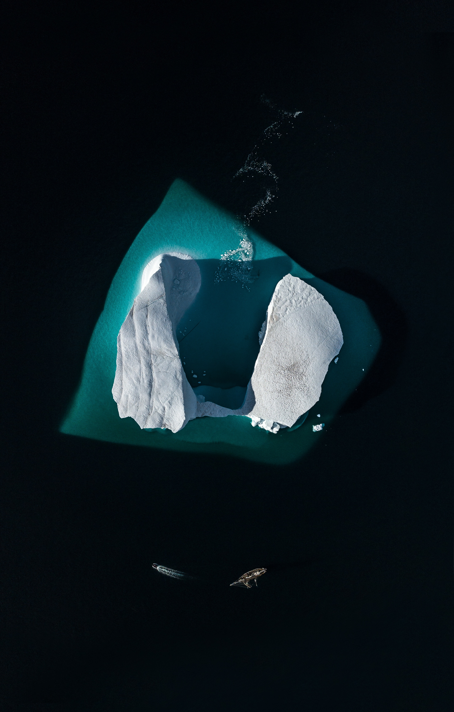

물론, 어떻게 살아갈지를 정하지 않고 살아간다고 하여도 어떠한 문제가 생기거나 잘못 살아간다는 의미는 아니다. 
삶을 살아가지는 사람과 삶을 살아가는 사람의 차이라고 생각한다.
To see the world, things dangerous to come to, to see behind walls, draw closer, to find each other, and to feel. that is the purpose of life.